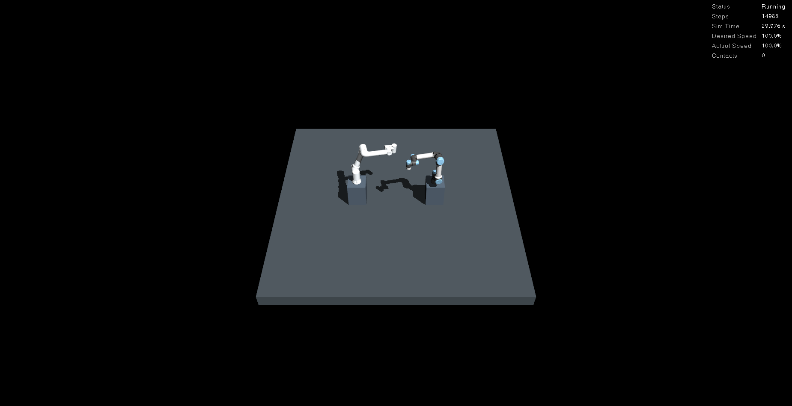
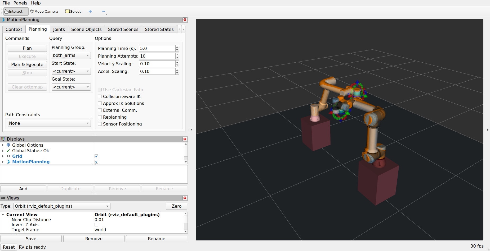

평가 범위와 판정
예비 평가입력·검사 해상도를 보존하고 공유 0초 평가와 최선 지연 상한으로 계산을 줄인 비교. 실제 GUI 제작 상태를 별도 실행으로 확인했습니다.
- 고정 입력 6개 × 두 방식 × 5회. 선택 팔·지연·전체 spline·거리 평가가 모든 반복에서 정확히 같음.
- random-case-0001: 탐색 중앙값 0.085→0.042wall초, 거리 호출 1934→967회.
- random-case-0002: 탐색 중앙값 0.084→0.042wall초, 거리 호출 1888→944회.
- random-case-0003: 탐색 중앙값 0.162→0.082wall초, 거리 호출 3626→1813회.
- random-case-0004: 탐색 중앙값 0.087→0.044wall초, 거리 호출 1924→962회.
- random-case-0005: 탐색 중앙값 0.083→0.042wall초, 거리 호출 1892→946회.
- crossing: 탐색 중앙값 1.975→1.537wall초, 거리 호출 39917→30784회.
- 별도 GUI 실제 실행: MuJoCo·RViz GPU 사용, 12관절·공유 시계/상태·계획·충돌 거부·양팔 취소·접촉 0·정상 종료 확인.
해석의 한계
- 같은 구현의 optimize=False 참조 경로와 optimize=True를 비교. 과거 리포트의 다른 실행 시간과 직접 속도 향상을 비교하지 않음.
- 고정 입력·소규모 반복이며 OS 스케줄링·배경 부하를 고정하지 않음. p95/p99·통계적 신뢰구간·전체 작업 공간 성공률을 제시하지 않음.
- 절감한 탐색 시간과 지령→실제 이동 전체 지연은 구분. 선택 경로의 최종 MuJoCo/MoveIt 안전검사와 네이티브 접촉 감시는 계속 수행.
- GUI 사진은 실제 소유 프로세스의 X11 화면. 전용 통합 조작 화면은 미구현이며 현재 조작은 MuJoCo·RViz·CLI로 구성.
- GUI 점검과 오프라인 탐색은 별도 실행. 정지 유지 RTF는 GUI FPS나 최대 처리량이 아님. 물리·경로 계산은 현재 CPU 구성, GPU 확인은 GUI 렌더링 범위.
- 그리퍼·공구 TCP·CAD·양팔 Pose/IK·실물 연결과 대규모 교차/장애물 평가가 남아 있음.
지령 → 계산 → 동작의 계측 범위
고정 입력 출발 탐색 A/B
측정 / wall입력 로딩·ROS·동작과 구분; 정확한 결과 일치와 호출 수 확인
별도 GUI 통합 점검
측정 / wallGPU 렌더링·12관절 제어·계획·취소·종료와 실제 화면
정량 지표
n은 해당 조건에서 이 지표를 집계한 실행/반복 수입니다. 관측 자세 표본 수와 구분합니다. 서로 다른 시계·실행의 시간을 더해 전체 응답시간으로 사용하지 않습니다.
| 지표 | 조건 | 값 | 단위 / 시계 | 집계 / n | 범위·설명 |
|---|---|---|---|---|---|
| 탐색 시간 중앙값 | random-case-0001 / 기존 두 순서 탐색 | 0.0848391 | s / wall | median / 5 | 같은 고정 입력의 오프라인 출발 탐색 모델 로딩·ROS 왕복·예약 대기·물리 실행 제외. native 시간은 전체 탐색 시간의 일부이며 따로 더하지 않음. |
| 탐색 시간 중앙값 | random-case-0001 / 중복·상한 제거 | 0.0422895 | s / wall | median / 5 | 같은 고정 입력의 오프라인 출발 탐색 모델 로딩·ROS 왕복·예약 대기·물리 실행 제외. native 시간은 전체 탐색 시간의 일부이며 따로 더하지 않음. |
| 탐색 시간 중앙값 | random-case-0002 / 기존 두 순서 탐색 | 0.0837139 | s / wall | median / 5 | 같은 고정 입력의 오프라인 출발 탐색 모델 로딩·ROS 왕복·예약 대기·물리 실행 제외. native 시간은 전체 탐색 시간의 일부이며 따로 더하지 않음. |
| 탐색 시간 중앙값 | random-case-0002 / 중복·상한 제거 | 0.0419712 | s / wall | median / 5 | 같은 고정 입력의 오프라인 출발 탐색 모델 로딩·ROS 왕복·예약 대기·물리 실행 제외. native 시간은 전체 탐색 시간의 일부이며 따로 더하지 않음. |
| 탐색 시간 중앙값 | random-case-0003 / 기존 두 순서 탐색 | 0.162255 | s / wall | median / 5 | 같은 고정 입력의 오프라인 출발 탐색 모델 로딩·ROS 왕복·예약 대기·물리 실행 제외. native 시간은 전체 탐색 시간의 일부이며 따로 더하지 않음. |
| 탐색 시간 중앙값 | random-case-0003 / 중복·상한 제거 | 0.0815418 | s / wall | median / 5 | 같은 고정 입력의 오프라인 출발 탐색 모델 로딩·ROS 왕복·예약 대기·물리 실행 제외. native 시간은 전체 탐색 시간의 일부이며 따로 더하지 않음. |
| 탐색 시간 중앙값 | random-case-0004 / 기존 두 순서 탐색 | 0.087418 | s / wall | median / 5 | 같은 고정 입력의 오프라인 출발 탐색 모델 로딩·ROS 왕복·예약 대기·물리 실행 제외. native 시간은 전체 탐색 시간의 일부이며 따로 더하지 않음. |
| 탐색 시간 중앙값 | random-case-0004 / 중복·상한 제거 | 0.0442962 | s / wall | median / 5 | 같은 고정 입력의 오프라인 출발 탐색 모델 로딩·ROS 왕복·예약 대기·물리 실행 제외. native 시간은 전체 탐색 시간의 일부이며 따로 더하지 않음. |
| 탐색 시간 중앙값 | random-case-0005 / 기존 두 순서 탐색 | 0.0831445 | s / wall | median / 5 | 같은 고정 입력의 오프라인 출발 탐색 모델 로딩·ROS 왕복·예약 대기·물리 실행 제외. native 시간은 전체 탐색 시간의 일부이며 따로 더하지 않음. |
| 탐색 시간 중앙값 | random-case-0005 / 중복·상한 제거 | 0.0416185 | s / wall | median / 5 | 같은 고정 입력의 오프라인 출발 탐색 모델 로딩·ROS 왕복·예약 대기·물리 실행 제외. native 시간은 전체 탐색 시간의 일부이며 따로 더하지 않음. |
| 탐색 시간 중앙값 | crossing / 기존 두 순서 탐색 | 1.9748 | s / wall | median / 5 | 같은 고정 입력의 오프라인 출발 탐색 모델 로딩·ROS 왕복·예약 대기·물리 실행 제외. native 시간은 전체 탐색 시간의 일부이며 따로 더하지 않음. |
| 탐색 시간 중앙값 | crossing / 중복·상한 제거 | 1.53741 | s / wall | median / 5 | 같은 고정 입력의 오프라인 출발 탐색 모델 로딩·ROS 왕복·예약 대기·물리 실행 제외. native 시간은 전체 탐색 시간의 일부이며 따로 더하지 않음. |
| 탐색 시간 최댓값 | random-case-0001 / 기존 두 순서 탐색 | 0.0856842 | s / wall | max / 5 | 같은 고정 입력의 오프라인 출발 탐색 모델 로딩·ROS 왕복·예약 대기·물리 실행 제외. native 시간은 전체 탐색 시간의 일부이며 따로 더하지 않음. |
| 탐색 시간 최댓값 | random-case-0001 / 중복·상한 제거 | 0.0427806 | s / wall | max / 5 | 같은 고정 입력의 오프라인 출발 탐색 모델 로딩·ROS 왕복·예약 대기·물리 실행 제외. native 시간은 전체 탐색 시간의 일부이며 따로 더하지 않음. |
| 탐색 시간 최댓값 | random-case-0002 / 기존 두 순서 탐색 | 0.0843729 | s / wall | max / 5 | 같은 고정 입력의 오프라인 출발 탐색 모델 로딩·ROS 왕복·예약 대기·물리 실행 제외. native 시간은 전체 탐색 시간의 일부이며 따로 더하지 않음. |
| 탐색 시간 최댓값 | random-case-0002 / 중복·상한 제거 | 0.0429529 | s / wall | max / 5 | 같은 고정 입력의 오프라인 출발 탐색 모델 로딩·ROS 왕복·예약 대기·물리 실행 제외. native 시간은 전체 탐색 시간의 일부이며 따로 더하지 않음. |
| 탐색 시간 최댓값 | random-case-0003 / 기존 두 순서 탐색 | 0.164531 | s / wall | max / 5 | 같은 고정 입력의 오프라인 출발 탐색 모델 로딩·ROS 왕복·예약 대기·물리 실행 제외. native 시간은 전체 탐색 시간의 일부이며 따로 더하지 않음. |
| 탐색 시간 최댓값 | random-case-0003 / 중복·상한 제거 | 0.0883574 | s / wall | max / 5 | 같은 고정 입력의 오프라인 출발 탐색 모델 로딩·ROS 왕복·예약 대기·물리 실행 제외. native 시간은 전체 탐색 시간의 일부이며 따로 더하지 않음. |
| 탐색 시간 최댓값 | random-case-0004 / 기존 두 순서 탐색 | 0.0880725 | s / wall | max / 5 | 같은 고정 입력의 오프라인 출발 탐색 모델 로딩·ROS 왕복·예약 대기·물리 실행 제외. native 시간은 전체 탐색 시간의 일부이며 따로 더하지 않음. |
| 탐색 시간 최댓값 | random-case-0004 / 중복·상한 제거 | 0.0449862 | s / wall | max / 5 | 같은 고정 입력의 오프라인 출발 탐색 모델 로딩·ROS 왕복·예약 대기·물리 실행 제외. native 시간은 전체 탐색 시간의 일부이며 따로 더하지 않음. |
| 탐색 시간 최댓값 | random-case-0005 / 기존 두 순서 탐색 | 0.0962296 | s / wall | max / 5 | 같은 고정 입력의 오프라인 출발 탐색 모델 로딩·ROS 왕복·예약 대기·물리 실행 제외. native 시간은 전체 탐색 시간의 일부이며 따로 더하지 않음. |
| 탐색 시간 최댓값 | random-case-0005 / 중복·상한 제거 | 0.0421806 | s / wall | max / 5 | 같은 고정 입력의 오프라인 출발 탐색 모델 로딩·ROS 왕복·예약 대기·물리 실행 제외. native 시간은 전체 탐색 시간의 일부이며 따로 더하지 않음. |
| 탐색 시간 최댓값 | crossing / 기존 두 순서 탐색 | 2.0012 | s / wall | max / 5 | 같은 고정 입력의 오프라인 출발 탐색 모델 로딩·ROS 왕복·예약 대기·물리 실행 제외. native 시간은 전체 탐색 시간의 일부이며 따로 더하지 않음. |
| 탐색 시간 최댓값 | crossing / 중복·상한 제거 | 1.55206 | s / wall | max / 5 | 같은 고정 입력의 오프라인 출발 탐색 모델 로딩·ROS 왕복·예약 대기·물리 실행 제외. native 시간은 전체 탐색 시간의 일부이며 따로 더하지 않음. |
| 네이티브 거리 호출 | random-case-0001 / 기존 두 순서 탐색 | 1934 | count / 해당 없음 | median / 5 | 같은 고정 입력의 오프라인 출발 탐색 모델 로딩·ROS 왕복·예약 대기·물리 실행 제외. native 시간은 전체 탐색 시간의 일부이며 따로 더하지 않음. |
| 네이티브 거리 호출 | random-case-0001 / 중복·상한 제거 | 967 | count / 해당 없음 | median / 5 | 같은 고정 입력의 오프라인 출발 탐색 모델 로딩·ROS 왕복·예약 대기·물리 실행 제외. native 시간은 전체 탐색 시간의 일부이며 따로 더하지 않음. |
| 네이티브 거리 호출 | random-case-0002 / 기존 두 순서 탐색 | 1888 | count / 해당 없음 | median / 5 | 같은 고정 입력의 오프라인 출발 탐색 모델 로딩·ROS 왕복·예약 대기·물리 실행 제외. native 시간은 전체 탐색 시간의 일부이며 따로 더하지 않음. |
| 네이티브 거리 호출 | random-case-0002 / 중복·상한 제거 | 944 | count / 해당 없음 | median / 5 | 같은 고정 입력의 오프라인 출발 탐색 모델 로딩·ROS 왕복·예약 대기·물리 실행 제외. native 시간은 전체 탐색 시간의 일부이며 따로 더하지 않음. |
| 네이티브 거리 호출 | random-case-0003 / 기존 두 순서 탐색 | 3626 | count / 해당 없음 | median / 5 | 같은 고정 입력의 오프라인 출발 탐색 모델 로딩·ROS 왕복·예약 대기·물리 실행 제외. native 시간은 전체 탐색 시간의 일부이며 따로 더하지 않음. |
| 네이티브 거리 호출 | random-case-0003 / 중복·상한 제거 | 1813 | count / 해당 없음 | median / 5 | 같은 고정 입력의 오프라인 출발 탐색 모델 로딩·ROS 왕복·예약 대기·물리 실행 제외. native 시간은 전체 탐색 시간의 일부이며 따로 더하지 않음. |
| 네이티브 거리 호출 | random-case-0004 / 기존 두 순서 탐색 | 1924 | count / 해당 없음 | median / 5 | 같은 고정 입력의 오프라인 출발 탐색 모델 로딩·ROS 왕복·예약 대기·물리 실행 제외. native 시간은 전체 탐색 시간의 일부이며 따로 더하지 않음. |
| 네이티브 거리 호출 | random-case-0004 / 중복·상한 제거 | 962 | count / 해당 없음 | median / 5 | 같은 고정 입력의 오프라인 출발 탐색 모델 로딩·ROS 왕복·예약 대기·물리 실행 제외. native 시간은 전체 탐색 시간의 일부이며 따로 더하지 않음. |
| 네이티브 거리 호출 | random-case-0005 / 기존 두 순서 탐색 | 1892 | count / 해당 없음 | median / 5 | 같은 고정 입력의 오프라인 출발 탐색 모델 로딩·ROS 왕복·예약 대기·물리 실행 제외. native 시간은 전체 탐색 시간의 일부이며 따로 더하지 않음. |
| 네이티브 거리 호출 | random-case-0005 / 중복·상한 제거 | 946 | count / 해당 없음 | median / 5 | 같은 고정 입력의 오프라인 출발 탐색 모델 로딩·ROS 왕복·예약 대기·물리 실행 제외. native 시간은 전체 탐색 시간의 일부이며 따로 더하지 않음. |
| 네이티브 거리 호출 | crossing / 기존 두 순서 탐색 | 39917 | count / 해당 없음 | median / 5 | 같은 고정 입력의 오프라인 출발 탐색 모델 로딩·ROS 왕복·예약 대기·물리 실행 제외. native 시간은 전체 탐색 시간의 일부이며 따로 더하지 않음. |
| 네이티브 거리 호출 | crossing / 중복·상한 제거 | 30784 | count / 해당 없음 | median / 5 | 같은 고정 입력의 오프라인 출발 탐색 모델 로딩·ROS 왕복·예약 대기·물리 실행 제외. native 시간은 전체 탐색 시간의 일부이며 따로 더하지 않음. |
| 실제 평가 후보 | random-case-0001 / 기존 두 순서 탐색 | 2 | count / 해당 없음 | median / 5 | 같은 고정 입력의 오프라인 출발 탐색 모델 로딩·ROS 왕복·예약 대기·물리 실행 제외. native 시간은 전체 탐색 시간의 일부이며 따로 더하지 않음. |
| 실제 평가 후보 | random-case-0001 / 중복·상한 제거 | 1 | count / 해당 없음 | median / 5 | 같은 고정 입력의 오프라인 출발 탐색 모델 로딩·ROS 왕복·예약 대기·물리 실행 제외. native 시간은 전체 탐색 시간의 일부이며 따로 더하지 않음. |
| 실제 평가 후보 | random-case-0002 / 기존 두 순서 탐색 | 2 | count / 해당 없음 | median / 5 | 같은 고정 입력의 오프라인 출발 탐색 모델 로딩·ROS 왕복·예약 대기·물리 실행 제외. native 시간은 전체 탐색 시간의 일부이며 따로 더하지 않음. |
| 실제 평가 후보 | random-case-0002 / 중복·상한 제거 | 1 | count / 해당 없음 | median / 5 | 같은 고정 입력의 오프라인 출발 탐색 모델 로딩·ROS 왕복·예약 대기·물리 실행 제외. native 시간은 전체 탐색 시간의 일부이며 따로 더하지 않음. |
| 실제 평가 후보 | random-case-0003 / 기존 두 순서 탐색 | 2 | count / 해당 없음 | median / 5 | 같은 고정 입력의 오프라인 출발 탐색 모델 로딩·ROS 왕복·예약 대기·물리 실행 제외. native 시간은 전체 탐색 시간의 일부이며 따로 더하지 않음. |
| 실제 평가 후보 | random-case-0003 / 중복·상한 제거 | 1 | count / 해당 없음 | median / 5 | 같은 고정 입력의 오프라인 출발 탐색 모델 로딩·ROS 왕복·예약 대기·물리 실행 제외. native 시간은 전체 탐색 시간의 일부이며 따로 더하지 않음. |
| 실제 평가 후보 | random-case-0004 / 기존 두 순서 탐색 | 2 | count / 해당 없음 | median / 5 | 같은 고정 입력의 오프라인 출발 탐색 모델 로딩·ROS 왕복·예약 대기·물리 실행 제외. native 시간은 전체 탐색 시간의 일부이며 따로 더하지 않음. |
| 실제 평가 후보 | random-case-0004 / 중복·상한 제거 | 1 | count / 해당 없음 | median / 5 | 같은 고정 입력의 오프라인 출발 탐색 모델 로딩·ROS 왕복·예약 대기·물리 실행 제외. native 시간은 전체 탐색 시간의 일부이며 따로 더하지 않음. |
| 실제 평가 후보 | random-case-0005 / 기존 두 순서 탐색 | 2 | count / 해당 없음 | median / 5 | 같은 고정 입력의 오프라인 출발 탐색 모델 로딩·ROS 왕복·예약 대기·물리 실행 제외. native 시간은 전체 탐색 시간의 일부이며 따로 더하지 않음. |
| 실제 평가 후보 | random-case-0005 / 중복·상한 제거 | 1 | count / 해당 없음 | median / 5 | 같은 고정 입력의 오프라인 출발 탐색 모델 로딩·ROS 왕복·예약 대기·물리 실행 제외. native 시간은 전체 탐색 시간의 일부이며 따로 더하지 않음. |
| 실제 평가 후보 | crossing / 기존 두 순서 탐색 | 58 | count / 해당 없음 | median / 5 | 같은 고정 입력의 오프라인 출발 탐색 모델 로딩·ROS 왕복·예약 대기·물리 실행 제외. native 시간은 전체 탐색 시간의 일부이며 따로 더하지 않음. |
| 실제 평가 후보 | crossing / 중복·상한 제거 | 46 | count / 해당 없음 | median / 5 | 같은 고정 입력의 오프라인 출발 탐색 모델 로딩·ROS 왕복·예약 대기·물리 실행 제외. native 시간은 전체 탐색 시간의 일부이며 따로 더하지 않음. |
| 네이티브 거리 계산 시간 | random-case-0001 / 기존 두 순서 탐색 | 0.043513 | s / wall | median / 5 | 같은 고정 입력의 오프라인 출발 탐색 모델 로딩·ROS 왕복·예약 대기·물리 실행 제외. native 시간은 전체 탐색 시간의 일부이며 따로 더하지 않음. |
| 네이티브 거리 계산 시간 | random-case-0001 / 중복·상한 제거 | 0.0216845 | s / wall | median / 5 | 같은 고정 입력의 오프라인 출발 탐색 모델 로딩·ROS 왕복·예약 대기·물리 실행 제외. native 시간은 전체 탐색 시간의 일부이며 따로 더하지 않음. |
| 네이티브 거리 계산 시간 | random-case-0002 / 기존 두 순서 탐색 | 0.042996 | s / wall | median / 5 | 같은 고정 입력의 오프라인 출발 탐색 모델 로딩·ROS 왕복·예약 대기·물리 실행 제외. native 시간은 전체 탐색 시간의 일부이며 따로 더하지 않음. |
| 네이티브 거리 계산 시간 | random-case-0002 / 중복·상한 제거 | 0.0215986 | s / wall | median / 5 | 같은 고정 입력의 오프라인 출발 탐색 모델 로딩·ROS 왕복·예약 대기·물리 실행 제외. native 시간은 전체 탐색 시간의 일부이며 따로 더하지 않음. |
| 네이티브 거리 계산 시간 | random-case-0003 / 기존 두 순서 탐색 | 0.0862392 | s / wall | median / 5 | 같은 고정 입력의 오프라인 출발 탐색 모델 로딩·ROS 왕복·예약 대기·물리 실행 제외. native 시간은 전체 탐색 시간의 일부이며 따로 더하지 않음. |
| 네이티브 거리 계산 시간 | random-case-0003 / 중복·상한 제거 | 0.0433169 | s / wall | median / 5 | 같은 고정 입력의 오프라인 출발 탐색 모델 로딩·ROS 왕복·예약 대기·물리 실행 제외. native 시간은 전체 탐색 시간의 일부이며 따로 더하지 않음. |
| 네이티브 거리 계산 시간 | random-case-0004 / 기존 두 순서 탐색 | 0.0460209 | s / wall | median / 5 | 같은 고정 입력의 오프라인 출발 탐색 모델 로딩·ROS 왕복·예약 대기·물리 실행 제외. native 시간은 전체 탐색 시간의 일부이며 따로 더하지 않음. |
| 네이티브 거리 계산 시간 | random-case-0004 / 중복·상한 제거 | 0.0232319 | s / wall | median / 5 | 같은 고정 입력의 오프라인 출발 탐색 모델 로딩·ROS 왕복·예약 대기·물리 실행 제외. native 시간은 전체 탐색 시간의 일부이며 따로 더하지 않음. |
| 네이티브 거리 계산 시간 | random-case-0005 / 기존 두 순서 탐색 | 0.0423715 | s / wall | median / 5 | 같은 고정 입력의 오프라인 출발 탐색 모델 로딩·ROS 왕복·예약 대기·물리 실행 제외. native 시간은 전체 탐색 시간의 일부이며 따로 더하지 않음. |
| 네이티브 거리 계산 시간 | random-case-0005 / 중복·상한 제거 | 0.0211326 | s / wall | median / 5 | 같은 고정 입력의 오프라인 출발 탐색 모델 로딩·ROS 왕복·예약 대기·물리 실행 제외. native 시간은 전체 탐색 시간의 일부이며 따로 더하지 않음. |
| 네이티브 거리 계산 시간 | crossing / 기존 두 순서 탐색 | 0.978188 | s / wall | median / 5 | 같은 고정 입력의 오프라인 출발 탐색 모델 로딩·ROS 왕복·예약 대기·물리 실행 제외. native 시간은 전체 탐색 시간의 일부이며 따로 더하지 않음. |
| 네이티브 거리 계산 시간 | crossing / 중복·상한 제거 | 0.75134 | s / wall | median / 5 | 같은 고정 입력의 오프라인 출발 탐색 모델 로딩·ROS 왕복·예약 대기·물리 실행 제외. native 시간은 전체 탐색 시간의 일부이며 따로 더하지 않음. |
| 선택된 팔의 지연 | random-case-0001 / 기존 두 순서 탐색 | 0 | s / sim | median / 5 | 같은 고정 입력의 오프라인 출발 탐색 모델 로딩·ROS 왕복·예약 대기·물리 실행 제외. native 시간은 전체 탐색 시간의 일부이며 따로 더하지 않음. |
| 선택된 팔의 지연 | random-case-0001 / 중복·상한 제거 | 0 | s / sim | median / 5 | 같은 고정 입력의 오프라인 출발 탐색 모델 로딩·ROS 왕복·예약 대기·물리 실행 제외. native 시간은 전체 탐색 시간의 일부이며 따로 더하지 않음. |
| 선택된 팔의 지연 | random-case-0002 / 기존 두 순서 탐색 | 0 | s / sim | median / 5 | 같은 고정 입력의 오프라인 출발 탐색 모델 로딩·ROS 왕복·예약 대기·물리 실행 제외. native 시간은 전체 탐색 시간의 일부이며 따로 더하지 않음. |
| 선택된 팔의 지연 | random-case-0002 / 중복·상한 제거 | 0 | s / sim | median / 5 | 같은 고정 입력의 오프라인 출발 탐색 모델 로딩·ROS 왕복·예약 대기·물리 실행 제외. native 시간은 전체 탐색 시간의 일부이며 따로 더하지 않음. |
| 선택된 팔의 지연 | random-case-0003 / 기존 두 순서 탐색 | 0 | s / sim | median / 5 | 같은 고정 입력의 오프라인 출발 탐색 모델 로딩·ROS 왕복·예약 대기·물리 실행 제외. native 시간은 전체 탐색 시간의 일부이며 따로 더하지 않음. |
| 선택된 팔의 지연 | random-case-0003 / 중복·상한 제거 | 0 | s / sim | median / 5 | 같은 고정 입력의 오프라인 출발 탐색 모델 로딩·ROS 왕복·예약 대기·물리 실행 제외. native 시간은 전체 탐색 시간의 일부이며 따로 더하지 않음. |
| 선택된 팔의 지연 | random-case-0004 / 기존 두 순서 탐색 | 0 | s / sim | median / 5 | 같은 고정 입력의 오프라인 출발 탐색 모델 로딩·ROS 왕복·예약 대기·물리 실행 제외. native 시간은 전체 탐색 시간의 일부이며 따로 더하지 않음. |
| 선택된 팔의 지연 | random-case-0004 / 중복·상한 제거 | 0 | s / sim | median / 5 | 같은 고정 입력의 오프라인 출발 탐색 모델 로딩·ROS 왕복·예약 대기·물리 실행 제외. native 시간은 전체 탐색 시간의 일부이며 따로 더하지 않음. |
| 선택된 팔의 지연 | random-case-0005 / 기존 두 순서 탐색 | 0 | s / sim | median / 5 | 같은 고정 입력의 오프라인 출발 탐색 모델 로딩·ROS 왕복·예약 대기·물리 실행 제외. native 시간은 전체 탐색 시간의 일부이며 따로 더하지 않음. |
| 선택된 팔의 지연 | random-case-0005 / 중복·상한 제거 | 0 | s / sim | median / 5 | 같은 고정 입력의 오프라인 출발 탐색 모델 로딩·ROS 왕복·예약 대기·물리 실행 제외. native 시간은 전체 탐색 시간의 일부이며 따로 더하지 않음. |
| 선택된 팔의 지연 | crossing / 기존 두 순서 탐색 | 2.3 | s / sim | median / 5 | 같은 고정 입력의 오프라인 출발 탐색 모델 로딩·ROS 왕복·예약 대기·물리 실행 제외. native 시간은 전체 탐색 시간의 일부이며 따로 더하지 않음. |
| 선택된 팔의 지연 | crossing / 중복·상한 제거 | 2.3 | s / sim | median / 5 | 같은 고정 입력의 오프라인 출발 탐색 모델 로딩·ROS 왕복·예약 대기·물리 실행 제외. native 시간은 전체 탐색 시간의 일부이며 따로 더하지 않음. |
| 선택 경로 최소 간격 | random-case-0001 / 기존 두 순서 탐색 | 183.604 | mm / 해당 없음 | min / 5 | 같은 고정 입력의 오프라인 출발 탐색 모델 로딩·ROS 왕복·예약 대기·물리 실행 제외. native 시간은 전체 탐색 시간의 일부이며 따로 더하지 않음. |
| 선택 경로 최소 간격 | random-case-0001 / 중복·상한 제거 | 183.604 | mm / 해당 없음 | min / 5 | 같은 고정 입력의 오프라인 출발 탐색 모델 로딩·ROS 왕복·예약 대기·물리 실행 제외. native 시간은 전체 탐색 시간의 일부이며 따로 더하지 않음. |
| 선택 경로 최소 간격 | random-case-0002 / 기존 두 순서 탐색 | 183.604 | mm / 해당 없음 | min / 5 | 같은 고정 입력의 오프라인 출발 탐색 모델 로딩·ROS 왕복·예약 대기·물리 실행 제외. native 시간은 전체 탐색 시간의 일부이며 따로 더하지 않음. |
| 선택 경로 최소 간격 | random-case-0002 / 중복·상한 제거 | 183.604 | mm / 해당 없음 | min / 5 | 같은 고정 입력의 오프라인 출발 탐색 모델 로딩·ROS 왕복·예약 대기·물리 실행 제외. native 시간은 전체 탐색 시간의 일부이며 따로 더하지 않음. |
| 선택 경로 최소 간격 | random-case-0003 / 기존 두 순서 탐색 | 60.6391 | mm / 해당 없음 | min / 5 | 같은 고정 입력의 오프라인 출발 탐색 모델 로딩·ROS 왕복·예약 대기·물리 실행 제외. native 시간은 전체 탐색 시간의 일부이며 따로 더하지 않음. |
| 선택 경로 최소 간격 | random-case-0003 / 중복·상한 제거 | 60.6391 | mm / 해당 없음 | min / 5 | 같은 고정 입력의 오프라인 출발 탐색 모델 로딩·ROS 왕복·예약 대기·물리 실행 제외. native 시간은 전체 탐색 시간의 일부이며 따로 더하지 않음. |
| 선택 경로 최소 간격 | random-case-0004 / 기존 두 순서 탐색 | 177.024 | mm / 해당 없음 | min / 5 | 같은 고정 입력의 오프라인 출발 탐색 모델 로딩·ROS 왕복·예약 대기·물리 실행 제외. native 시간은 전체 탐색 시간의 일부이며 따로 더하지 않음. |
| 선택 경로 최소 간격 | random-case-0004 / 중복·상한 제거 | 177.024 | mm / 해당 없음 | min / 5 | 같은 고정 입력의 오프라인 출발 탐색 모델 로딩·ROS 왕복·예약 대기·물리 실행 제외. native 시간은 전체 탐색 시간의 일부이며 따로 더하지 않음. |
| 선택 경로 최소 간격 | random-case-0005 / 기존 두 순서 탐색 | 183.602 | mm / 해당 없음 | min / 5 | 같은 고정 입력의 오프라인 출발 탐색 모델 로딩·ROS 왕복·예약 대기·물리 실행 제외. native 시간은 전체 탐색 시간의 일부이며 따로 더하지 않음. |
| 선택 경로 최소 간격 | random-case-0005 / 중복·상한 제거 | 183.602 | mm / 해당 없음 | min / 5 | 같은 고정 입력의 오프라인 출발 탐색 모델 로딩·ROS 왕복·예약 대기·물리 실행 제외. native 시간은 전체 탐색 시간의 일부이며 따로 더하지 않음. |
| 선택 경로 최소 간격 | crossing / 기존 두 순서 탐색 | 33.7866 | mm / 해당 없음 | min / 5 | 같은 고정 입력의 오프라인 출발 탐색 모델 로딩·ROS 왕복·예약 대기·물리 실행 제외. native 시간은 전체 탐색 시간의 일부이며 따로 더하지 않음. |
| 선택 경로 최소 간격 | crossing / 중복·상한 제거 | 33.7866 | mm / 해당 없음 | min / 5 | 같은 고정 입력의 오프라인 출발 탐색 모델 로딩·ROS 왕복·예약 대기·물리 실행 제외. native 시간은 전체 탐색 시간의 일부이며 따로 더하지 않음. |
| GUI 정지 유지 구간 real-time factor | 현재 PC GUI 통합 점검 | 0.999979 | ratio / 해당 없음 | single / 1 | 동작 검증 후 5.0wall초 paced stationary holding 움직임 중 전체 성능·최대 물리 처리량·GUI FPS 측정이 아님. |
표본과 평가 조건
| 조건 | 고유 사례 / 실행 수 | 성공 / 실패 | seed·범위 |
|---|---|---|---|
| random-case-0001 / 기존 두 순서 탐색 | 1 / 5 | 5 / 0 | 고정 spline 재생; 모드별 워밍업 1회 제외·반복 순서 교대 같은 모델·정책·시작·입력에서 선택 팔/지연/전체 spline/선택 경로 거리 평가가 정확히 일치해야 통과. |
| random-case-0001 / 중복·상한 제거 | 1 / 5 | 5 / 0 | 고정 spline 재생; 모드별 워밍업 1회 제외·반복 순서 교대 같은 모델·정책·시작·입력에서 선택 팔/지연/전체 spline/선택 경로 거리 평가가 정확히 일치해야 통과. |
| random-case-0002 / 기존 두 순서 탐색 | 1 / 5 | 5 / 0 | 고정 spline 재생; 모드별 워밍업 1회 제외·반복 순서 교대 같은 모델·정책·시작·입력에서 선택 팔/지연/전체 spline/선택 경로 거리 평가가 정확히 일치해야 통과. |
| random-case-0002 / 중복·상한 제거 | 1 / 5 | 5 / 0 | 고정 spline 재생; 모드별 워밍업 1회 제외·반복 순서 교대 같은 모델·정책·시작·입력에서 선택 팔/지연/전체 spline/선택 경로 거리 평가가 정확히 일치해야 통과. |
| random-case-0003 / 기존 두 순서 탐색 | 1 / 5 | 5 / 0 | 고정 spline 재생; 모드별 워밍업 1회 제외·반복 순서 교대 같은 모델·정책·시작·입력에서 선택 팔/지연/전체 spline/선택 경로 거리 평가가 정확히 일치해야 통과. |
| random-case-0003 / 중복·상한 제거 | 1 / 5 | 5 / 0 | 고정 spline 재생; 모드별 워밍업 1회 제외·반복 순서 교대 같은 모델·정책·시작·입력에서 선택 팔/지연/전체 spline/선택 경로 거리 평가가 정확히 일치해야 통과. |
| random-case-0004 / 기존 두 순서 탐색 | 1 / 5 | 5 / 0 | 고정 spline 재생; 모드별 워밍업 1회 제외·반복 순서 교대 같은 모델·정책·시작·입력에서 선택 팔/지연/전체 spline/선택 경로 거리 평가가 정확히 일치해야 통과. |
| random-case-0004 / 중복·상한 제거 | 1 / 5 | 5 / 0 | 고정 spline 재생; 모드별 워밍업 1회 제외·반복 순서 교대 같은 모델·정책·시작·입력에서 선택 팔/지연/전체 spline/선택 경로 거리 평가가 정확히 일치해야 통과. |
| random-case-0005 / 기존 두 순서 탐색 | 1 / 5 | 5 / 0 | 고정 spline 재생; 모드별 워밍업 1회 제외·반복 순서 교대 같은 모델·정책·시작·입력에서 선택 팔/지연/전체 spline/선택 경로 거리 평가가 정확히 일치해야 통과. |
| random-case-0005 / 중복·상한 제거 | 1 / 5 | 5 / 0 | 고정 spline 재생; 모드별 워밍업 1회 제외·반복 순서 교대 같은 모델·정책·시작·입력에서 선택 팔/지연/전체 spline/선택 경로 거리 평가가 정확히 일치해야 통과. |
| crossing / 기존 두 순서 탐색 | 1 / 5 | 5 / 0 | 고정 spline 재생; 모드별 워밍업 1회 제외·반복 순서 교대 같은 모델·정책·시작·입력에서 선택 팔/지연/전체 spline/선택 경로 거리 평가가 정확히 일치해야 통과. |
| crossing / 중복·상한 제거 | 1 / 5 | 5 / 0 | 고정 spline 재생; 모드별 워밍업 1회 제외·반복 순서 교대 같은 모델·정책·시작·입력에서 선택 팔/지연/전체 spline/선택 경로 거리 평가가 정확히 일치해야 통과. |
| 현재 PC GUI 통합 점검 | 1 / 1 | 1 / 0 | 별도 실제 GUI 실행 1회 MuJoCo·RViz GPU 렌더링, 12관절/공유 시계, 계획·충돌 거부·양팔 취소·정상 종료. |
자료와 재현 정보
전체 A/B 반복·후보·GUI 검증 원본 (gzip JSON) data


기준 코드: 8c46b5f35a1fdffe76a9f86c01df7925e949bcf5
- 평가 ID
- 2026-10-21-search-optimization
- 작업장면
- fr5_ur5e
- 모델
- FR5, UR5e
- 시나리오
- exact_departure_search_ab
- 입력 종류
- fixed_joint_targets
- 환경 / os
- Ubuntu 22.04.5 LTS
- 환경 / cpu
- 13th Gen Intel(R) Core(TM) i7-13700
- 환경 / python
- 3.10.12
- 환경 / ros
- ROS 2 Humble (별도 GUI 검증)
- 환경 / native_mujoco
- MuJoCo 3.12.0
- 환경 / gui_run
- 20261021T093837.684967Z-e087f7f3